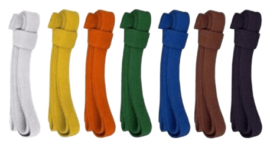
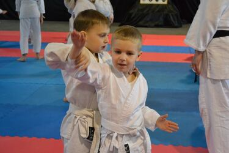
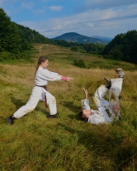
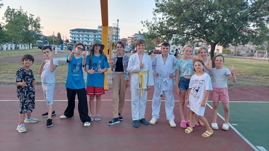
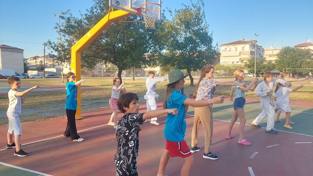
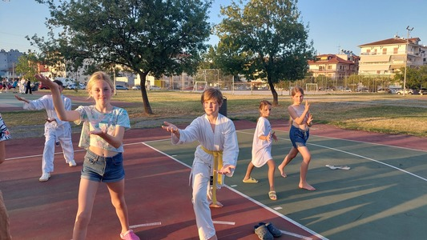
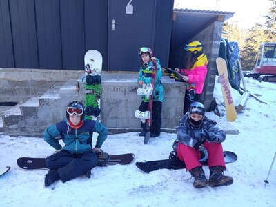

Айкідо для дітей – це один із пріоритетних напрямків роботи нашої школи Йошинкан. Під впливом занять Айкідо, дитина всебічно і гармонійно розвивається. Регулярні відвідування тренувань сприяють фізичному розвитку, зміцненню здоров`я, а також соціальній адаптації дитини в колективі.

Система атестаційних екзаменів, яка існує в школі, вчить дитину ставити перед собою мету і пріоритети у власних бажаннях. Якщо дитина має бажання атестуватись на вищий рівень (КЮ), вона буде старанніше і наполегливіше тренуватись. Тим самим буде досягати бажаного результату, а не проводити весь час за комп’ютерними іграми.
Структура заняття побудована так, що всі вправи, які дитина виконує протягом тренування, сприяють розвитку гнучкості тіла, координації, спритності. Ігрові вправи забезпечують розвиток гнучкого мислення, яке потрібне для прийняття швидкого і оптимального рішення.


Основою у вивченні Айкідо дітьми є правильне вміння використовувати техніку страховки Укемі (кувирок вперед і назад), для того щоб унеможливити отримання травми під час вивчення технік. Ще одним важливим моментом у вивченні дітьми Айкідо, це є ЗФП (загальна фізична підготовка).
Всеукраїнська федерація Айкідо Йошинкан організовує вивчення Айкідо не тільки безпосередньо в Додзьо. Організовуються різноманітні семінари з майстрами Айкідо Йошинкан України, Чехії, Польщі, Німеччини, США, Японії.


Правила поведінки, які існують в Додзьо (зал для занять Айкідо ) повинні дотримуватись всіма учнями. Завдяки цим правилам етикету у дитини розвивається дисциплінованість, повага до товаришів, стриманість у проявах емоцій. Догляд за Догі (одяг для занять) розвиває у дитини акуратність і естетичність.
Інструктори Всеукраїнської федерації Айкідо Йошинкан постійно слідкують, щоб діти вивчали Айкідо в позитивній атмосфері, дружньо відносились один до одного і отримували позитивний настрій від тренувань.


Літні та зимові спортивні табори, на яких тренування поєднуються з активним відпочинком і оздоровленням. Ознайомчі екскурсії із поєднанням занять Айкідо у різні міста України. Завдяки цим заходам діти активно пізнають світ, знаходять нових друзів, займають активну позицію у суспільстві.